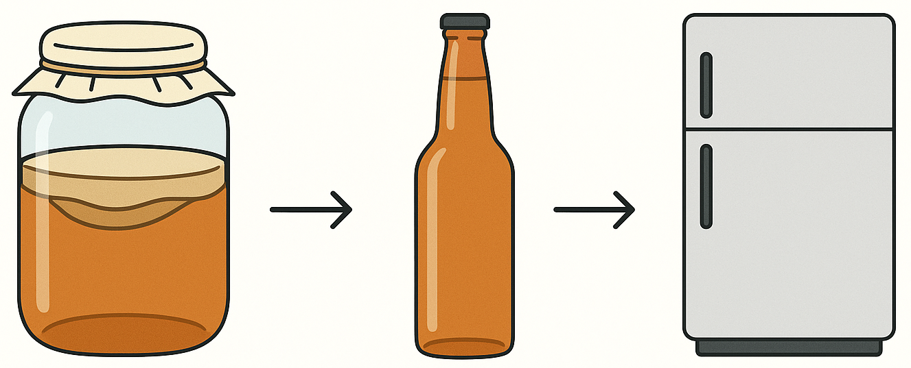

Process Overview
Part 1: Fermentation using a SCOBY.
Part 2: Bottling and Carbonation.
Part 3: Refrigeration to settle carbonation.

Required Materials
Containers
Organics

Procedure
Part 1 - Fermenting Kombucha
- Bring 8 cups of water up to a boil.
- Steep 5 bags of black tea. Wait 10 minutes.
- Add 1 cup of sugar to a 1+ gallon glass container.
- Add the tea to the glass container.
- Add ~6 cups of water to the glass container.
- Let the tea cool to below 90 degrees Fahrenheit (32 degrees Celsius)
- Add ~2 cups of SCOBY fluid.
- Cover the top of the glass container with a cloth, and rubberband the cloth to ensure no openings exist.
- Let the Kombucha ferment for 7-10 days.
Part 2 - Bottling & Carbonation
- Add fresh fruit / fruit juice to ~8 glass bottles.
- Add your fermented Kombucha to the glass bottles with a funnel.
- Seal the bottles.
- Let them sit for 2-5 days, and burp them on a daily basis.
Warning: Pressure builds in the bottles during the fermentation process. Bottles will EXPLODE if not burped frequently.
Always remember to take care of your Kombucha.
Part 3 - Refrigeration
Once the Kombucha is carbonated to preference, refrigerate the bottles.
Your Kombucha is now ready for consumption. Enjoy!